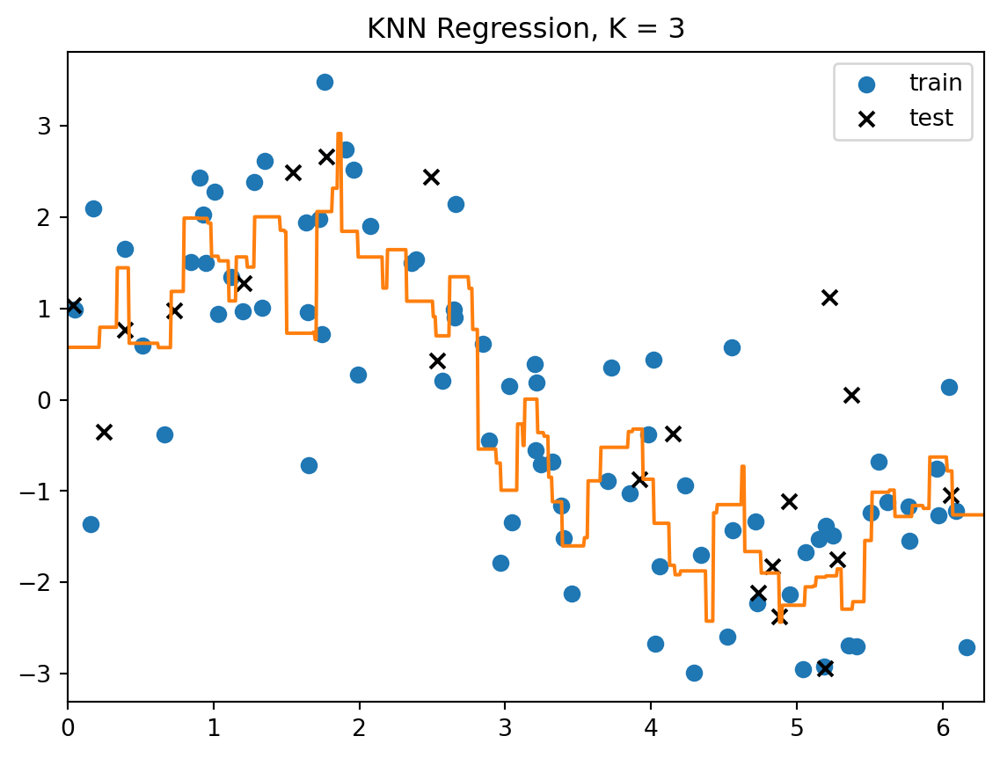
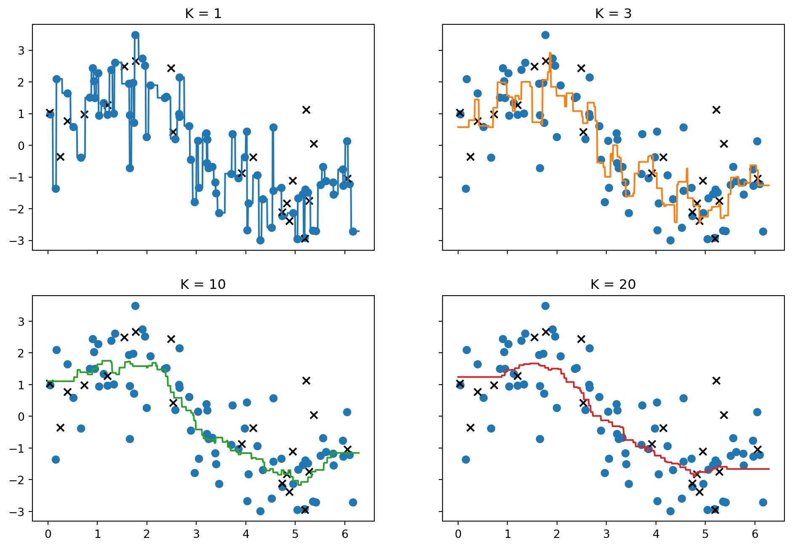
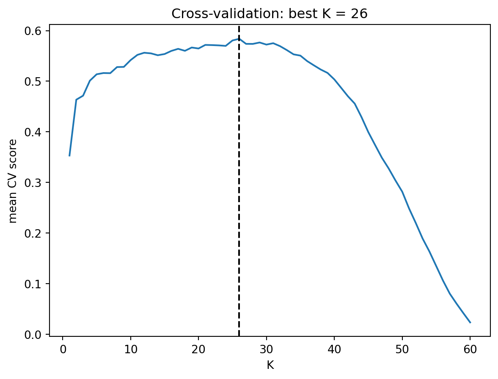
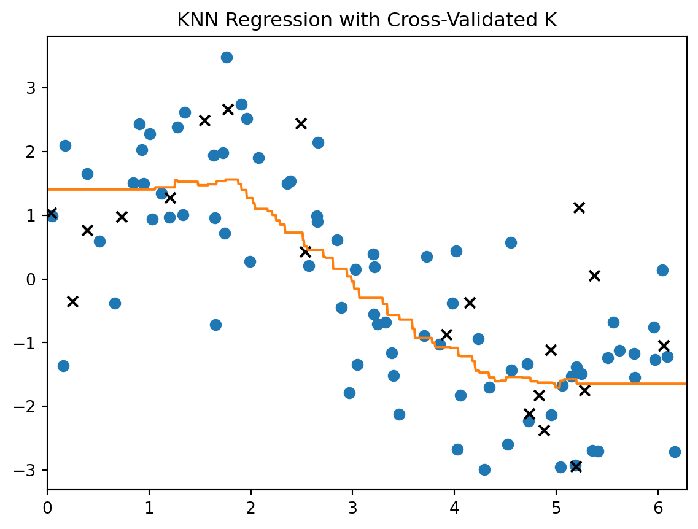
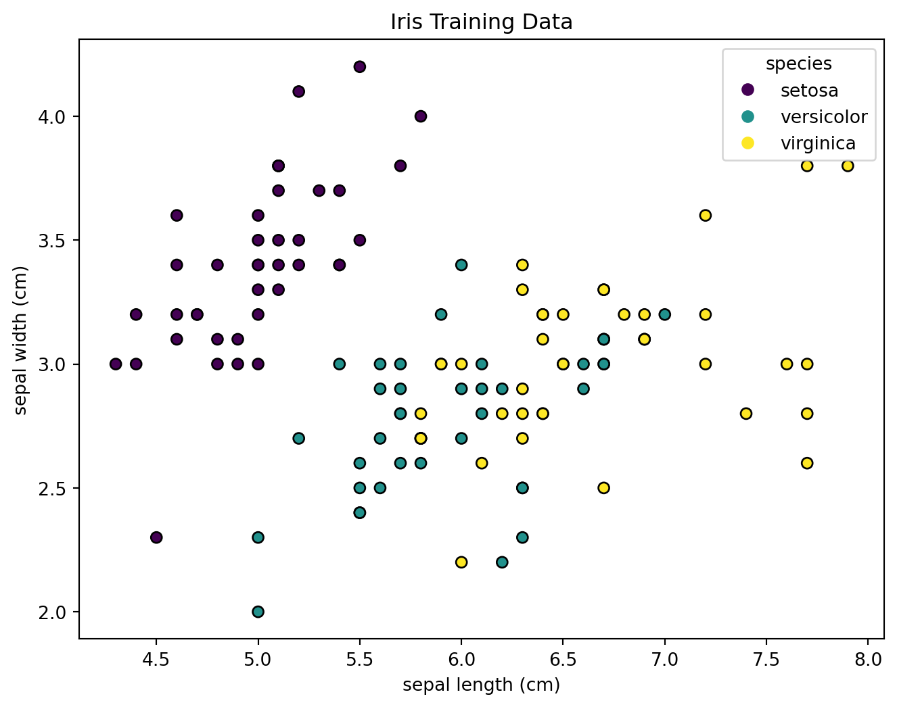
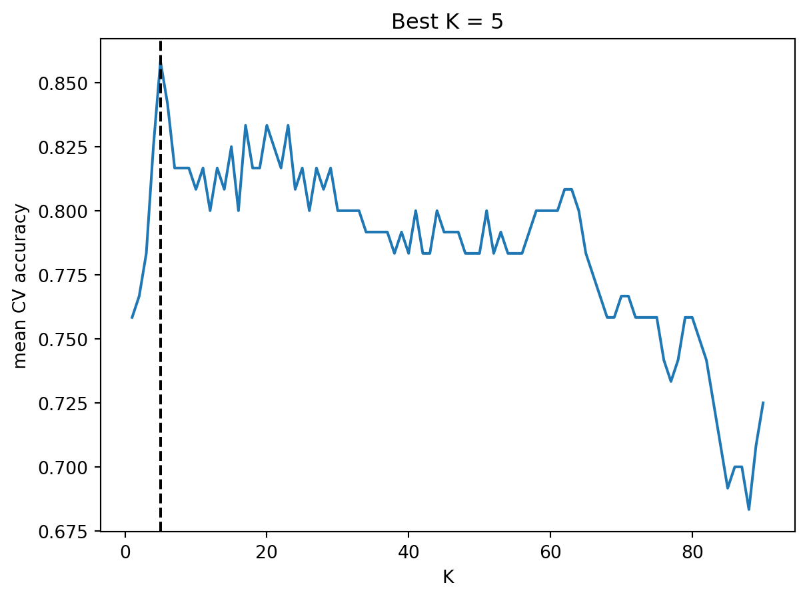
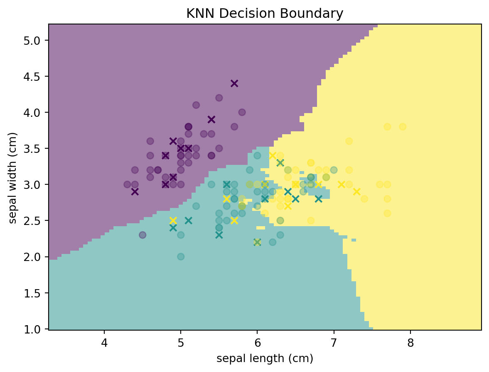

import numpy as np
from sklearn.model_selection import train_test_split
rng = np.random.default_rng(1)
N = 100
X = rng.uniform(0, 2 * np.pi, size=N).reshape(-1, 1)
y = 2 * np.sin(X[:, 0]) + rng.normal(size=N)
X_train, X_test, y_train, y_test = train_test_split(X, y, test_size=0.2, random_state=1)7 K-Nearest Neighbors
K-nearest neighbors (KNN) is a simple nonparametric prediction method. It does not estimate a fixed formula like linear regression. Instead, it predicts from nearby training observations. The method is local: points close to the new observation have influence, and distant points usually have none.
7.1 The KNN Model
KNN can be used for both regression and classification. The ideas are the same: use nearby observations to predict.
7.1.1 KNN Regression
Suppose the training data are \[ \{(x_i,y_i)\}_{i=1}^n, \quad x_i\in\mathbb R^p,\; y_i\in\mathbb R. \]
We want to estimate the regression function
\[ f(x)=\Exp[Y\mid X=x]. \]
Definition 7.1 (KNN regressor) For a new point \(x_0\), let \(N_K(x_0)\) be the set of indices corresponding to the \(K\) training points closest to \(x_0\). The KNN regression estimate is
\[ \hat f(x_0) = \frac{1}{K}\sum_{i\in N_K(x_0)} y_i. \]
That is, the predicted value is the average response among the \(K\) nearest neighbors of \(x_0\).
KNN regression estimates the conditional mean locally by averaging the responses of nearby observations.
Sometimes neighbors are assigned different weights. In that case, a weighted KNN regressor has the form
\[ \hat f(x_0) = \sum_{i=1}^n w_i(x_0)y_i, \]
where
\[ w_i(x_0)\ge 0, \qquad \sum_{i=1}^n w_i(x_0)=1. \]
Ordinary KNN regression uses
\[ w_i(x_0) = \begin{cases} 1/K, & i\in N_K(x_0),\\ 0, & i\notin N_K(x_0). \end{cases} \]
7.1.2 KNN Classification
For classification, the response is a class label rather than a numerical response. Given a new point \(x_0\), KNN classification finds the \(K\) nearest training observations and predicts by majority vote.
Definition 7.2 (KNN classifier) For a new point \(x_0\), let \(N_K(x_0)\) be the set of indices of the \(K\) nearest training observations. The KNN classifier predicts
\[ \hat G(x_0) = \arg\max_g\sum_{i\in N_K(x_0)}I(y_i=g). \]
In words, KNN predicts the class receiving the largest number of votes among the K nearest neighbors.
For binary classification, KNN naturally provides a local estimate of the probability that an observation belongs to class 1:
\[ \hat p(x_0) = \frac{1}{K} \sum_{i\in N_K(x_0)} I(y_i=1). \]
Then predict class 1 if \(\hat p(x_0)\) is larger than a chosen threshold, usually \(0.5\).
This estimate can be interpreted as the proportion of class-1 observations among the nearest neighbors. The threshold part is related to logistic regreesion.
Note
Weighted KNN classification assigns larger weights to some neighbors, typically those closer to the query point. The predicted class is then determined by a weighted majority vote.
NoteLazy learner
Based on the definition, KNN does not estimate model parameters during training. It mainly stores the training observations and waits until prediction time to use them. For this reason, KNN is often called a lazy learner.
The training phase is extremely simple because KNN does not estimate any model parameters. The algorithm mainly stores the training observations for later use. If the training data have \(n\) observations and \(p\) predictors, storing the data costs about \(O(np)\).
The prediction cost can be much higher. For a single new observation, a brute-force KNN method computes its distance to all \(n\) training observations. This costs about \(O(np)\). After computing the distances, the algorithm must identify the \(K\) nearest observations. A full ranking of all distances requires \(O(n\log n)\) operations, although more efficient algorithms may reduce this cost. Taking all these into consideration, if we predict for \(m\) new observations, the brute-force distance computation costs about \(O(mnp)\).
Thus, KNN is simple to train but can be relatively slow at prediction time, especially when the training set is large or the number of predictors is large.
NoteComparison with Linear Models
Linear models are global models. A single fitted equation is used throughout the entire predictor space.
KNN is local. The prediction at \(x_0\) is determined by nearby training observations.
Because of this difference:
- Linear models are simple and interpretable but may fail to capture complex nonlinear relationships.
- KNN can adapt to nonlinear patterns without specifying a functional form.
However, KNN may become unstable when nearby data are sparse or noisy, while linear models often provide more stable predictions.
7.1.3 Distance
The most common distance is Euclidean distance:
\[ d(x,x') = \sqrt{\sum_{j=1}^p (x_j-x'_j)^2}. \]
KNN depends heavily on this distance. If one feature has a much larger scale than the others, it can dominate the distance calculation. This is why scaling is usually important.
Although Euclidean distance is the most common choice, other distances such as Manhattan distance can also be used.
NoteScaling Matters
KNN relies entirely on distances between observations.
If one predictor is measured on a much larger scale than another, it can dominate the distance calculation and effectively determine which observations are considered neighbors.
For example, a variable measured in thousands may overwhelm another variable measured between 0 and 1.
Therefore, KNN is usually applied after feature scaling, such as standardization.
In practice, KNN is often combined with StandardScaler() in a pipeline.
7.1.4 The Role of \(K\)
The tuning parameter \(K\) controls the smoothness of the fitted model.
- Small \(K\): uses very local information and can be sensitive to noise.
- Large \(K\): averages over more observations and is more stable, but can be biased.
This is the usual bias-variance tradeoff. Smaller \(K\) produces a more flexible fit. Larger \(K\) produces a smoother fit.
In practice, \(K\) is typically chosen using cross-validation.
NoteCurse of Dimensionality
KNN can work well in low-dimensional problems, but it often struggles when the number of features is large.
In high dimensions, data become sparse. As the number of features increases, the volume of the feature space grows rapidly. As a result, observations tend to be far apart from one another. Therefore local averaging becomes less meaningful.
This is called the curse of dimensionality.
7.2 KNN in sklearn
sklearn.neighbors provides:
KNeighborsRegressorfor regression,KNeighborsClassifierfor classification.
The estimator interface is the same as other sklearn models:
- Create the model.
- Fit the model using
.fit(). - Predict using
.predict(). - Usually coupled with
StandardScaler()to create a pipeline.
The arguments here are straightforword. In most cases the default choice (other than n_neighbors of course) is good enough. For details please check the official documents.
7.3 Example 1: One-Dimensional Regression
We first simulate a one-dimensional regression problem based on a noisy sine curve.
We then generate a grid of values and apply the fitted model to the grid in order to estimate the underlying regression function.
X_grid = np.linspace(0, 2 * np.pi, 1001).reshape(-1, 1)Fit a KNN regressor with \(K=3\).
from sklearn.neighbors import KNeighborsRegressor
knn = KNeighborsRegressor(n_neighbors=3)
knn.fit(X_train, y_train)
y_grid = knn.predict(X_grid)Plot the fitted curve.
import matplotlib.pyplot as plt
plt.scatter(X_train.ravel(), y_train, s=40, label="train")
plt.scatter(X_test.ravel(), y_test, s=40, marker="x", color="black", label="test")
plt.plot(X_grid.ravel(), y_grid, color="C1")
plt.title("KNN Regression, K = 3")
plt.xlim(0, 2 * np.pi)
plt.legend();
NoteThe dimension of
X and X_grid
Please pay attention to the dimension of X and X_grid. We generate them as 2D arrays by .reshape(-1, 1), and change them back to 1D array in plotting by .ravel().
Note that .ravel() is the same as .reshape(-1). We choose it because it is shorter.
7.3.1 Comparing Different Values of \(K\)
The following plot compares several choices of \(K\).
fig, axs = plt.subplots(2, 2, figsize=(12, 8), sharex=True, sharey=True)
for ax, k, color in zip(
axs.ravel(),
[1, 3, 10, 20],
["C0", "C1", "C2", "C3"],
):
model = KNeighborsRegressor(n_neighbors=k)
model.fit(X_train, y_train)
pred = model.predict(X_grid)
ax.scatter(X_train.ravel(), y_train, s=40, label="train")
ax.scatter(X_test.ravel(), y_test, s=40, marker="x", color="black", label="test")
ax.plot(X_grid.ravel(), pred, color=color)
ax.set_title(f"K = {k}");
The fitted curve becomes smoother as \(K\) increases.
7.3.2 Choosing \(K\) by Cross-Validation
We now use cross-validation on the training set to select the value of \(K\).
Since the training set contains 80 observations and we use cv=5, each training fold contains only 64 observations. Therefore we restrict the search range to values of \(K\) that are safely below this size.
from sklearn.model_selection import GridSearchCV
k_values = list(range(1, 61))
grid = GridSearchCV(KNeighborsRegressor(), param_grid={"n_neighbors": k_values}, cv=5)
grid.fit(X_train, y_train)
grid.best_params_{'n_neighbors': 26}Plot the cross-validation score.
plt.plot(k_values, grid.cv_results_["mean_test_score"])
plt.axvline(
x=grid.best_params_["n_neighbors"],
color="black",
linestyle="--",
)
plt.xlabel("K")
plt.ylabel("mean CV score")
plt.title(f"Cross-validation: best K = {grid.best_params_['n_neighbors']}");
Now plot the fitted curve using the selected value of \(K\).
y_grid_best = grid.predict(X_grid)
plt.scatter(X_train.ravel(), y_train, s=40, label="train")
plt.scatter(X_test.ravel(), y_test, s=40, marker="x", color="black", label="test")
plt.plot(X_grid.ravel(), y_grid_best, color="C1")
plt.title("KNN Regression with Cross-Validated K")
plt.xlim(0, 2 * np.pi);
Finally, evaluate the selected model on the test set.
grid.score(X_test, y_test)0.55529318497523547.4 Example: Iris Classification
We use the iris data from sklearn.datasets. To make visualization easy, we use only the first two features: sepal length and sepal width.
from sklearn import datasets
from sklearn.model_selection import train_test_split
iris = datasets.load_iris()
X = iris.data[:, :2]
y = iris.target
X_train, X_test, y_train, y_test = train_test_split(
X, y, test_size=0.2, random_state=1, stratify=y
)Plot the training data.
fig, ax = plt.subplots(figsize=(8, 6))
scatter = ax.scatter(
X_train[:, 0],
X_train[:, 1],
c=y_train,
edgecolor="k",
)
labels = ["setosa", "versicolor", "virginica"]
ax.legend(
handles=scatter.legend_elements()[0],
labels=labels,
title="species",
)
ax.set_xlabel(iris.feature_names[0])
ax.set_ylabel(iris.feature_names[1])
ax.set_title("Iris Training Data")Text(0.5, 1.0, 'Iris Training Data')
7.4.1 Pipeline
The usual KNN workflow includes scaling followed by the KNN model. A Pipeline keeps these steps together.
from sklearn.pipeline import make_pipeline
from sklearn.preprocessing import StandardScaler
from sklearn.neighbors import KNeighborsClassifier
pipe = make_pipeline(StandardScaler(), KNeighborsClassifier(n_neighbors=10))
pipe.fit(X_train, y_train)
y_pred = pipe.predict(X_test)
pipe.score(X_test, y_test)0.77.4.2 Choosing \(K\) for Classification
To choose \(K\), we tune kneighborsclassifier__n_neighbors inside the pipeline.
from sklearn.model_selection import GridSearchCV
n_values = list(range(1, 91))
param_grid = {"kneighborsclassifier__n_neighbors": n_values}
grid = GridSearchCV(pipe, param_grid=param_grid, cv=5, scoring="accuracy")
grid.fit(X_train, y_train)
grid.best_params_{'kneighborsclassifier__n_neighbors': 5}The best cross-validation score is:
grid.best_score_np.float64(0.8583333333333332)Plot the validation curve over different values of \(K\).
plt.plot(n_values, grid.cv_results_["mean_test_score"])
plt.axvline(
x=grid.best_params_["kneighborsclassifier__n_neighbors"],
color="black",
linestyle="--",
)
plt.xlabel("K")
plt.ylabel("mean CV accuracy")
plt.title(f"Best K = {grid.best_params_['kneighborsclassifier__n_neighbors']}")Text(0.5, 1.0, 'Best K = 5')
7.4.3 Decision Boundary
We can visualize the decision boundary using DecisionBoundaryDisplay.
Code
from sklearn.inspection import DecisionBoundaryDisplay
pipe.set_params(
kneighborsclassifier__n_neighbors=grid.best_params_[
"kneighborsclassifier__n_neighbors"
]
)
pipe.fit(X_train, y_train)
disp = DecisionBoundaryDisplay.from_estimator(
pipe,
X_train,
response_method="predict",
plot_method="pcolormesh",
xlabel=iris.feature_names[0],
ylabel=iris.feature_names[1],
alpha=0.5,
)
disp.ax_.scatter(X_test[:, 0], X_test[:, 1], c=y_test, marker="x", label="test")
disp.ax_.scatter(X_train[:, 0], X_train[:, 1], c=y_train, alpha=0.3, label="train")
plt.title("KNN Decision Boundary");